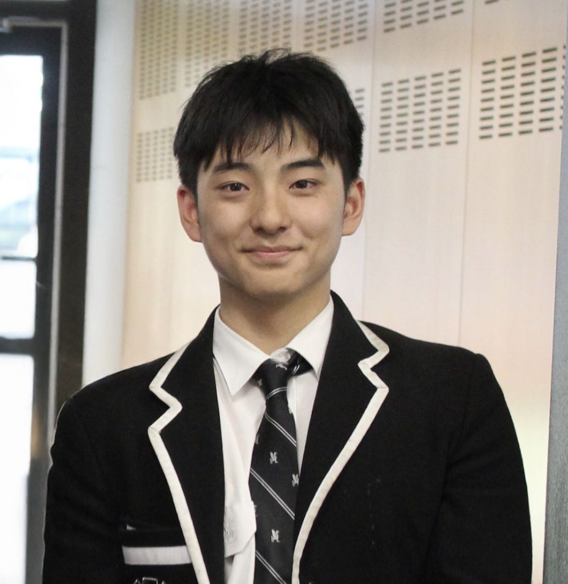

Alex Xu
Teaches: IB Biology HL · IB English Literature HL
“My goal is to give students a clear plan that turns panic into predictable marks.”
Key achievements
- IB predicted 45 (7 in every subject).
- Dux of Cohort 2024/2025
- Selective Score 260+
- Full Academic Scholarship to Top Private School
- Ranked 1st in English Literature HL, Biology HL, Geography SL, Physics SL
- Selected for ANU Australian Biology Olympiad Summer School, top 24 in Australia.
- Australian Biology Olympiad Top 24 (High Distinction)
- Melbourne University National Math Competition Winner 2022/2024
- Australian Big Science Competition High Distinction 2021/2022/2023/2024
- Very limited spaces due to commitments in research and competitions.
Student results snapshot
90%
- Around 90% of IB Biology HL students finish with 6 or 7.
- In IB English, many students move from borderline passes to stable level 6 essays, especially in Paper 1 and Paper 2.
- Several students have been shortlisted for science extension programs